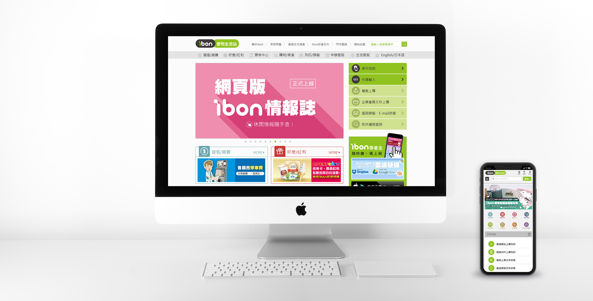
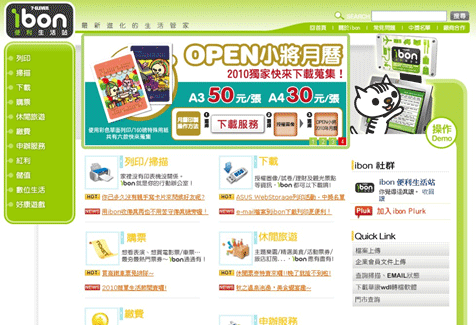
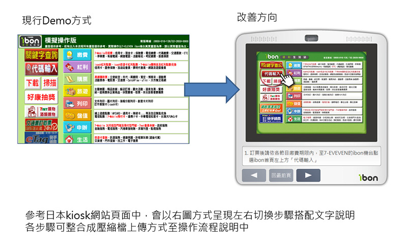
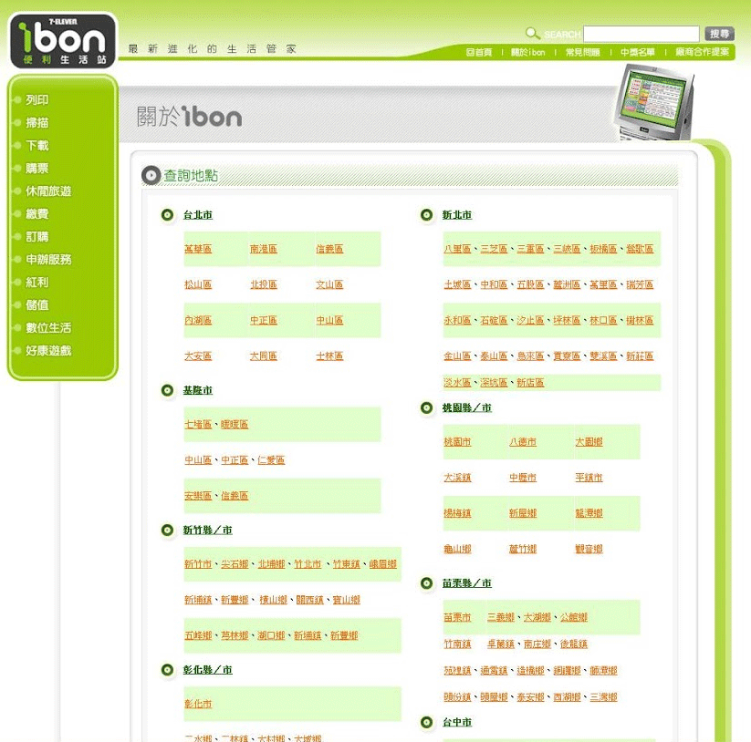
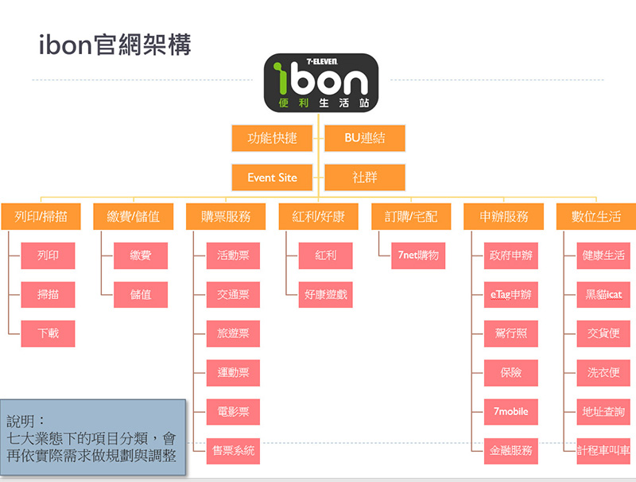
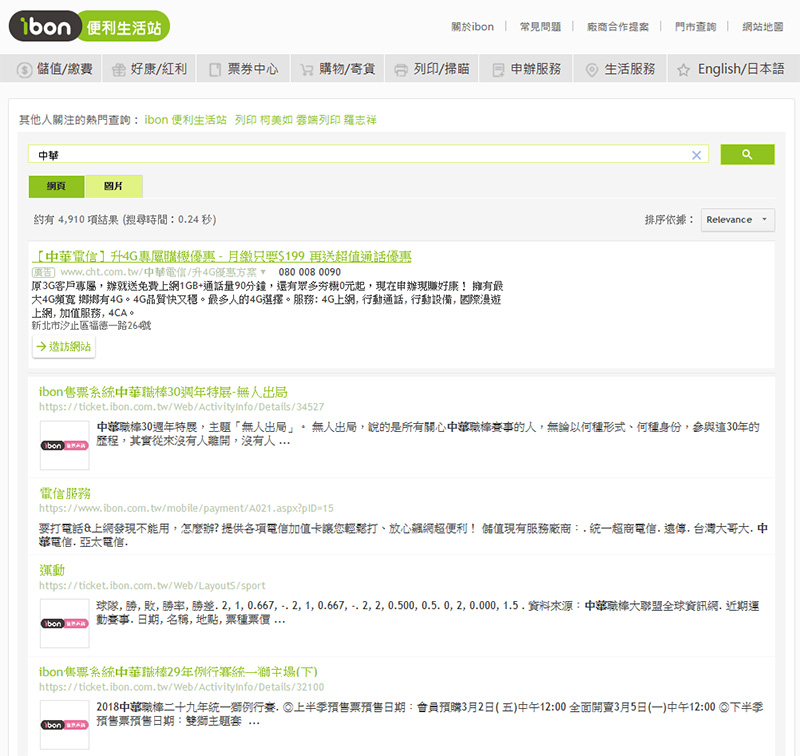
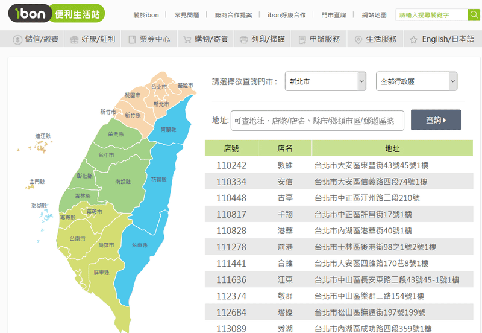
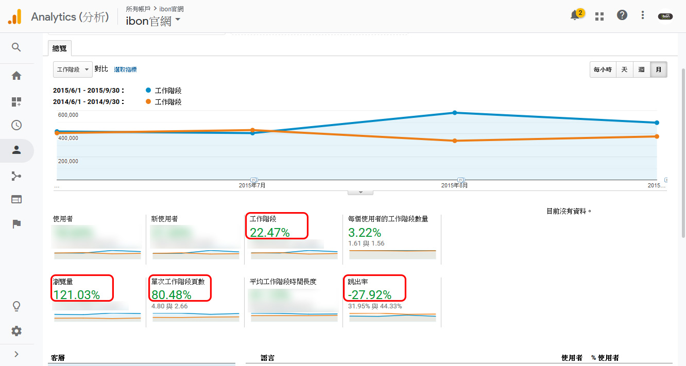

ibon官方網站
2015/5
-
ibon官方網站，因應ibon二代實體機器上線需求，網站須整體規劃，以符合各服務分類層級以及對應操作方式說明。
改版重點
提升ibon官網流量
- 2010年4月官網改版後，年度數據顯示改版前後流量成長約三倍。
- ibon票務資訊網成立後，官網數據成長緩慢，藉由官網改版，增強功能服務與子網站連結性，提升整體流量。
- 增加ibon社群曝光版位
強化業務/服務面
- 提升各業態以及服務能見度
- 強化服務應用功能（列印）
- 增加手機版本對應開發
強化行銷功能
- 行銷活動與功能需求
- 結合社群應用
- 改善關鍵字搜尋功能
專案歷程
-
- 前期規劃：運用Google Analytics分析網站瀏覽數據分析，並展開業務需求與專案人員訪談，做為改版基準參考。
- 開發前期：規劃網站前台架構，提供版型參考確認。依照需求整理為wireframe，加速專案進行討論，因應各裝置版型適應變化。統籌系統人員
- 開發中期：規劃改版日並調配建檔作業流程，網站切換後須正常運作，並訂定上線測試標準與時程安排。
- 開發後期：回饋整理個專案人員測試結果，解決網站測試問題，版型異常與操作面課題。
- 完成上線。
重點整理
-
- 頁面呈現方式、行動支援、UI操作說明
 - 強化功能頁面呈現與網站分類與類別易用性。
- 減少列印操作步驟，並增加手機版上傳功能。
- 依據Google Analytics分析，門市查詢瀏覽量為僅次於首頁的重點改善項目，查找方式、包含資料來源，改良目前須使用者利用ctrl+F的整頁式資料搜尋方式。

- 頁面呈現方式、行動支援、UI操作說明
-
解決改善方式
-
- 規劃類別架構與排序，依照數據編成。
 - 改善以往站內搜尋作法，導入google搜尋引擎，簡化系統維護人力，並可帶出集團品牌搜尋能見度。此外還可運用google搜尋內崁機制，排除競品搜尋以及曝光活動檔期效益。
 - 網站服務類別利用頁籤呈現，上傳列印可直接於同頁面顯示，減少尋找與提高易用性。
- 利用台灣地圖方式尋找各縣市之門市範圍，並搭被右側下拉選單連動選擇點選地區，增加易用性，並搭配地址、店號或店名等方式縮小搜尋範圍，更能加速搜尋結果。

- 規劃類別架構與排序，依照數據編成。
改版成效
-
2015/5/2 完成上線，與去年同期4 個月份數據對照改版後人次成長18.6％，瀏覽量成長121％，平均一位瀏覽者瀏覽頁數增加80％並減少28％跳出率。
